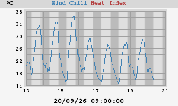
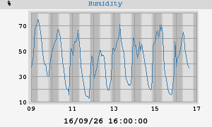
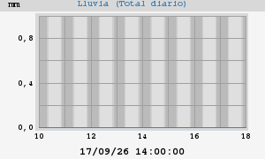
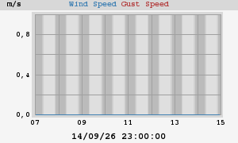
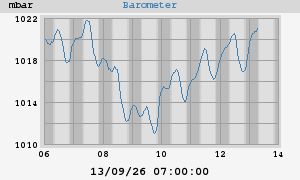
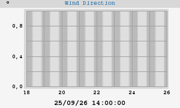
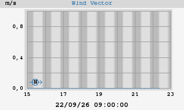

Gráficos y estadísticas semanales








|
Temperatura máxima Temperatura mínima |
37,7°C a las 18:18:54 (martes) 21,4°C a las 07:11:16 (martes) |
| Menor sensación térmica | 21,4°C a las 07:11:16 (martes) |
|
Humedad máxima Humedad mínima |
71% 04:58:34 (martes) 20% 15:56:17 (martes) |
|
Punto de rocio máximo Punto de rocio mínimo |
18,0°C 21:21:35 (lunes) 9,8°C 22:30:03 (lunes) |
|
Presión máxima Presión mínima |
1020,3 mbar a las 13:06:37 (lunes) 1015,8 mbar a las 18:49:02 (martes) |
| Lluvia total | 0,0 mm |
| Máxima tasa de lluvia | 0,0 mm/hr a las 13:06:37 (lunes) |
| Máxima vel. del viento | 0,0 m/s desde N/A a las 13:06:37 (lunes) |
| Viento medio | 0,0 m/s |
|
Vel. máxima del vector Dir. media del vector |
N/A 90° |
|
Temperatura máxima Temperatura mínima |
40,1°C - 23/06/26 18:10:00 13,4°C - 05/06/26 07:06:50 |
| Mínima sensación térmica | 13,4°C - 05/06/26 07:06:50 |
|
Humedad máxima Humedad mínima |
97% - 14/06/26 22:50:00 12% - 22/06/26 19:20:00 |
|
Punto de rocio máximo Punto de rocio mínimo |
18,1°C - 15/06/26 12:42:06 1,1°C - 08/06/26 18:55:23 |
|
Presión máxima Presión mínima |
1023,4 mbar - 12/06/26 08:52:02 1008,8 mbar - 04/06/26 17:28:01 |
| Lluvia total | 7,4 mm |
| Máxima tasa de lluvia | 32,8 mm/hr - 14/06/26 20:00:00 |
| Vel. máxima del viento | 0,0 m/s desde N/A - 01/06/26 00:00:03 |
| Vel. media del viento | 0,0 m/s |
|
Vel. media del vector Dir. media del vector |
N/A 90° |






